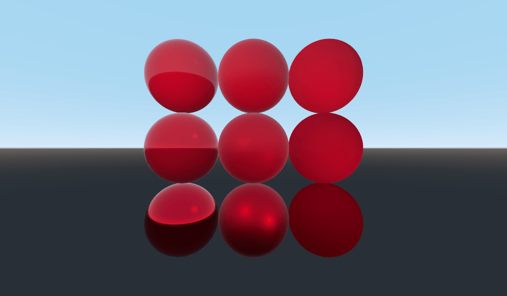
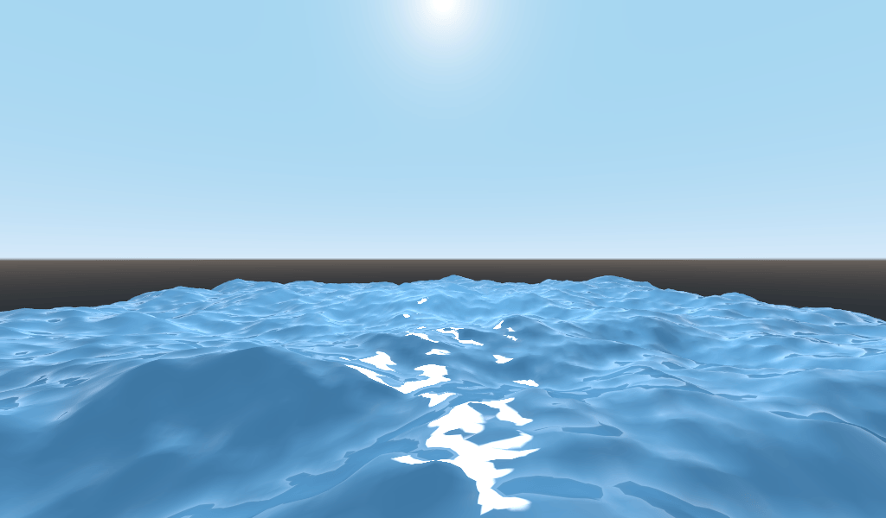
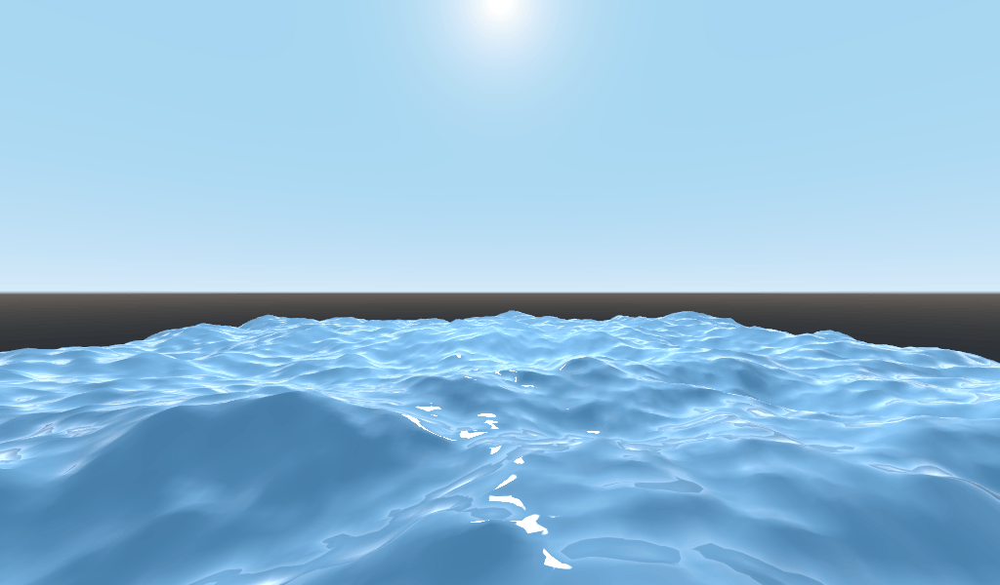
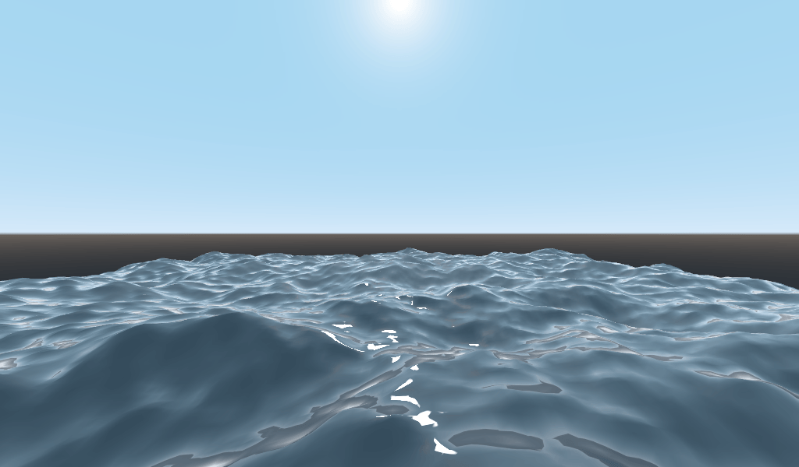
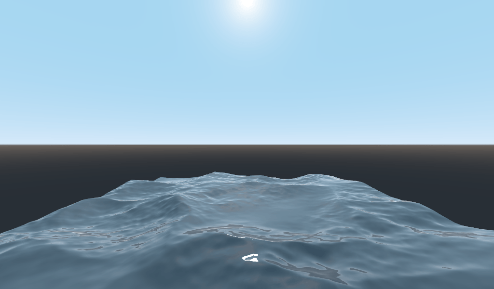

Shader 3D thứ hai của bạn
Nhìn tổng quát, Godot cung cấp cho người dùng một loạt tham số có thể đặt tùy chọn (AO, SSS_Strength, RIM, v.v.). Các tham số này tương ứng với những hiệu ứng phức tạp khác nhau (Ambient Occlusion, SubSurface Scattering, Rim Lighting, v.v.). Khi không được ghi vào, đoạn code tương ứng sẽ bị loại bỏ trước khi biên dịch, nên shader không phải chịu chi phí của tính năng thừa. Nhờ vậy người dùng dễ dàng có được shading đúng chuẩn PBR phức tạp mà không cần viết shader phức tạp. Tất nhiên, Godot cũng cho phép bạn bỏ qua tất cả các tham số này và viết một shader hoàn toàn tùy biến.
Để xem danh sách đầy đủ các tham số này, hãy xem tài liệu tham chiếu spatial shader.
Một điểm khác biệt giữa hàm vertex và hàm fragment là hàm vertex chạy cho từng vertex và đặt các thuộc tính như VERTEX (vị trí) và NORMAL, còn fragment shader chạy cho từng pixel và, quan trọng nhất, đặt màu ALBEDO của MeshInstance3D.
Hàm fragment spatial đầu tiên của bạn
Như đã đề cập ở phần trước của bài hướng dẫn, cách dùng chuẩn của hàm fragment trong Godot là thiết lập các thuộc tính material khác nhau và để Godot xử lý phần còn lại. Để linh hoạt hơn nữa, Godot còn cung cấp thứ gọi là render mode. Render mode được đặt ở đầu shader, ngay bên dưới shader_type, và chúng xác định loại chức năng bạn muốn các phần dựng sẵn của shader có.
Ví dụ, nếu bạn không muốn ánh sáng ảnh hưởng đến một đối tượng, hãy đặt render mode thành unshaded:
render_mode unshaded;
Bạn cũng có thể kết hợp nhiều render mode với nhau. Ví dụ, nếu bạn muốn dùng toon shading thay cho PBR shading chân thực hơn, hãy đặt diffuse mode và specular mode thành toon:
render_mode diffuse_toon, specular_toon;
Mô hình chức năng dựng sẵn này cho phép bạn viết các shader tùy biến phức tạp chỉ bằng cách thay đổi vài tham số.
Để xem danh sách đầy đủ các render mode, hãy xem Tài liệu tham chiếu spatial shader.
Trong phần này của bài hướng dẫn, ta sẽ đi qua cách lấy địa hình gồ ghề từ phần trước và biến nó thành đại dương.
Trước tiên hãy đặt màu của nước. Ta làm điều đó bằng cách đặt ALBEDO.
ALBEDO là một vec3 chứa màu của đối tượng.
Hãy đặt nó thành một sắc xanh dương đẹp mắt.
void fragment() {
ALBEDO = vec3(0.1, 0.3, 0.5);
}

Ta đặt nó thành một sắc xanh rất tối vì phần lớn màu xanh của nước sẽ đến từ phản chiếu của bầu trời.
Mô hình PBR mà Godot sử dụng dựa trên hai tham số chính: METALLIC và ROUGHNESS.
ROUGHNESS xác định bề mặt material mịn hay nhám đến mức nào. ROUGHNESS thấp sẽ làm material trông như nhựa bóng, còn roughness cao làm material trông có màu đặc hơn.
METALLIC xác định đối tượng giống kim loại đến mức nào. Tốt nhất nên đặt gần 0 hoặc 1. Hãy coi METALLIC như việc thay đổi sự cân bằng giữa phản chiếu và màu ALBEDO. METALLIC cao gần như bỏ qua hoàn toàn ALBEDO và trông như một tấm gương phản chiếu bầu trời. Còn METALLIC thấp thể hiện màu bầu trời và màu ALBEDO cân bằng hơn.
ROUGHNESS tăng từ 0 đến 1 từ trái sang phải, còn METALLIC tăng từ 0 đến 1 từ trên xuống dưới.

Ghi chú
METALLIC nên gần 0 hoặc 1 để có PBR shading đúng. Chỉ đặt giá trị ở giữa khi cần pha trộn giữa các material.
Nước không phải kim loại, nên ta sẽ đặt thuộc tính METALLIC của nó thành 0.0. Nước cũng phản chiếu rất mạnh, nên ta cũng sẽ đặt thuộc tính ROUGHNESS khá thấp.
void fragment() {
METALLIC = 0.0;
ROUGHNESS = 0.01;
ALBEDO = vec3(0.1, 0.3, 0.5);
}

Giờ ta có một bề mặt mịn trông như nhựa. Đã đến lúc nghĩ về một số đặc tính riêng của nước mà ta muốn mô phỏng. Có hai đặc tính chính sẽ biến bề mặt nhựa kỳ lạ này thành mặt nước cách điệu đẹp mắt. Thứ nhất là phản xạ specular. Phản xạ specular là những đốm sáng bạn thấy ở nơi mặt trời phản chiếu thẳng vào mắt. Thứ hai là phản xạ fresnel. Phản xạ fresnel là đặc tính khiến vật thể phản chiếu mạnh hơn ở góc nhìn nông. Đó là lý do bạn có thể nhìn xuyên xuống nước ngay bên dưới mình, nhưng ở xa hơn thì mặt nước phản chiếu bầu trời.
Để tăng phản xạ specular, ta sẽ làm hai việc. Thứ nhất, ta đổi render mode cho specular thành toon vì render mode toon có vùng sáng specular lớn hơn.
render_mode specular_toon;

Thứ hai, ta sẽ thêm rim lighting. Rim lighting tăng hiệu ứng ánh sáng ở các góc nhìn sượt. Thường nó được dùng để mô phỏng cách ánh sáng xuyên qua vải ở rìa đối tượng, nhưng ở đây ta sẽ dùng nó để tạo hiệu ứng nước đẹp mắt.
void fragment() {
RIM = 0.2;
METALLIC = 0.0;
ROUGHNESS = 0.01;
ALBEDO = vec3(0.1, 0.3, 0.5);
}

Để thêm phản xạ fresnel, ta sẽ tính một hệ số fresnel trong fragment shader. Ở đây, vì lý do hiệu năng, ta sẽ không dùng hệ số fresnel thực sự. Thay vào đó, ta sẽ xấp xỉ nó bằng tích vô hướng của vector NORMAL và VIEW. Vector NORMAL hướng ra khỏi bề mặt mesh, còn vector VIEW là hướng giữa mắt bạn và điểm đó trên bề mặt. Tích vô hướng giữa chúng là cách tiện lợi để biết bạn đang nhìn bề mặt trực diện hay ở góc sượt.
float fresnel = sqrt(1.0 - dot(NORMAL, VIEW));
Và pha trộn nó vào cả ROUGHNESS lẫn ALBEDO. Đây là lợi thế của ShaderMaterial so với StandardMaterial3D. Với StandardMaterial3D, ta có thể đặt các thuộc tính này bằng texture hoặc một số cố định. Nhưng với shader, ta có thể đặt chúng dựa trên bất kỳ hàm toán học nào ta nghĩ ra.
void fragment() {
float fresnel = sqrt(1.0 - dot(NORMAL, VIEW));
RIM = 0.2;
METALLIC = 0.0;
ROUGHNESS = 0.01 * (1.0 - fresnel);
ALBEDO = vec3(0.1, 0.3, 0.5) + (0.1 * fresnel);
}

Và giờ, chỉ với 5 dòng code, bạn đã có mặt nước trông phức tạp. Khi đã có chiếu sáng, mặt nước này trông quá sáng. Hãy làm nó tối đi. Việc này dễ dàng thực hiện bằng cách giảm các giá trị của vec3 ta truyền vào ALBEDO. Hãy đặt chúng thành vec3(0.01, 0.03, 0.05).

Tạo hoạt ảnh với TIME
Quay lại hàm vertex, ta có thể tạo hoạt ảnh cho sóng bằng biến dựng sẵn TIME.
TIME là một biến dựng sẵn có thể truy cập từ hàm vertex và fragment.
Trong bài hướng dẫn trước, ta đã tính độ cao bằng cách đọc từ heightmap. Trong bài này, ta sẽ làm tương tự. Hãy đặt code heightmap vào một hàm tên là height().
float height(vec2 position) {
return texture(noise, position / 10.0).x; // Scaling factor is based on mesh size (this PlaneMesh is 10×10).
}
Để dùng TIME trong hàm height(), ta cần truyền nó vào.
float height(vec2 position, float time) {
}
Và nhớ truyền nó vào đúng cách bên trong hàm vertex.
void vertex() {
vec2 pos = VERTEX.xz;
float k = height(pos, TIME);
VERTEX.y = k;
}
Thay vì dùng normalmap để tính normal, ta sẽ tính chúng thủ công trong hàm vertex(). Để làm vậy, hãy dùng dòng code sau.
NORMAL = normalize(vec3(k - height(pos + vec2(0.1, 0.0), TIME), 0.1, k - height(pos + vec2(0.0, 0.1), TIME)));
Ta cần tính NORMAL thủ công vì ở phần tiếp theo ta sẽ dùng toán học để tạo những con sóng trông phức tạp.
Giờ ta sẽ làm hàm height() phức tạp hơn một chút bằng cách dịch position theo cosin của TIME.
float height(vec2 position, float time) {
vec2 offset = 0.01 * cos(position + time);
return texture(noise, (position / 10.0) - offset).x;
}
Kết quả là những con sóng chuyển động chậm, nhưng không tự nhiên lắm. Phần tiếp theo sẽ đi sâu hơn vào việc dùng shader để tạo các hiệu ứng phức tạp hơn, trong trường hợp này là sóng chân thực, bằng cách thêm vài hàm toán học nữa.
Hiệu ứng nâng cao: sóng
Điều khiến shader mạnh mẽ là bạn có thể tạo ra hiệu ứng phức tạp bằng toán học. Để minh họa, ta sẽ nâng cấp những con sóng bằng cách sửa hàm height() và giới thiệu một hàm mới tên là wave().
wave() có một tham số, position, giống như trong height().
Ta sẽ gọi wave() nhiều lần trong height() để giả lập hình dạng của sóng.
float wave(vec2 position){
position += texture(noise, position / 10.0).x * 2.0 - 1.0;
vec2 wv = 1.0 - abs(sin(position));
return pow(1.0 - pow(wv.x * wv.y, 0.65), 4.0);
}
Thoạt nhìn thì trông phức tạp. Vậy hãy đi qua từng dòng một.
position += texture(noise, position / 10.0).x * 2.0 - 1.0;
Dịch vị trí theo texture noise. Việc này sẽ làm sóng uốn cong, để chúng không phải là những đường thẳng hoàn toàn thẳng hàng với lưới.
vec2 wv = 1.0 - abs(sin(position));
Định nghĩa một hàm dạng sóng bằng sin() và position. Bình thường sóng sin() rất tròn. Ta dùng abs() để lấy giá trị tuyệt đối, tạo cho chúng một gờ nhọn và giới hạn chúng trong khoảng 0-1. Sau đó ta lấy 1.0 trừ đi nó để đưa đỉnh lên trên.
return pow(1.0 - pow(wv.x * wv.y, 0.65), 4.0);
Nhân sóng theo hướng x với sóng theo hướng y rồi nâng lên lũy thừa để làm đỉnh nhọn hơn. Sau đó lấy 1.0 trừ đi kết quả để các gờ trở thành đỉnh, rồi nâng lên lũy thừa để làm gờ sắc hơn.
Giờ ta có thể thay nội dung của hàm height() bằng wave().
float height(vec2 position, float time) {
float h = wave(position);
return h;
}
Dùng cách này, bạn sẽ có:

Hình dạng sóng sin quá lộ liễu. Vậy hãy trải sóng ra một chút. Ta làm điều này bằng cách co giãn position.
float height(vec2 position, float time) {
float h = wave(position * 0.4);
return h;
}
Giờ nó trông đẹp hơn nhiều.

Ta còn có thể làm tốt hơn nữa nếu xếp chồng nhiều con sóng lên nhau với tần số và biên độ khác nhau. Nghĩa là ta sẽ co giãn position cho từng sóng để làm sóng hẹp hơn hoặc rộng hơn (tần số). Và ta sẽ nhân đầu ra của sóng để làm chúng thấp hơn hoặc cao hơn (biên độ).
Đây là ví dụ về cách bạn có thể xếp chồng bốn con sóng để có sóng trông đẹp hơn.
float height(vec2 position, float time) {
float d = wave((position + time) * 0.4) * 0.3;
d += wave((position - time) * 0.3) * 0.3;
d += wave((position + time) * 0.5) * 0.2;
d += wave((position - time) * 0.6) * 0.2;
return d;
}
Lưu ý rằng ta cộng thời gian vào hai sóng và trừ đi ở hai sóng còn lại. Việc này khiến sóng di chuyển theo các hướng khác nhau, tạo ra hiệu ứng phức tạp. Cũng lưu ý rằng các biên độ (số mà kết quả được nhân với) cộng lại đúng bằng 1.0. Điều này giữ sóng trong khoảng 0-1.
Với code này, bạn sẽ có những con sóng trông phức tạp hơn, và tất cả những gì bạn phải làm chỉ là thêm một chút toán học!

Để biết thêm về Spatial shader, hãy đọc tài liệu Shading Language và tài liệu Spatial Shaders. Ngoài ra, hãy xem các bài hướng dẫn nâng cao hơn trong mục Shading và 3D.